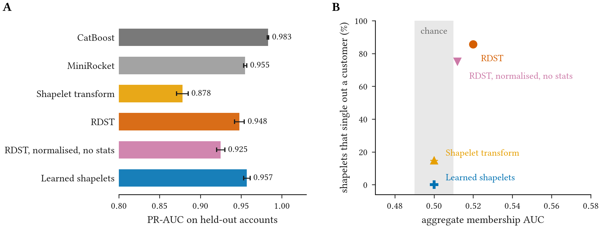
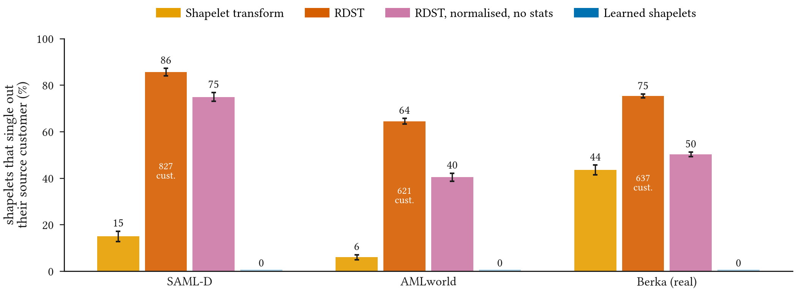
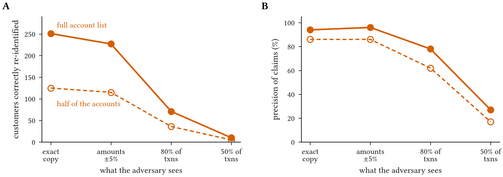
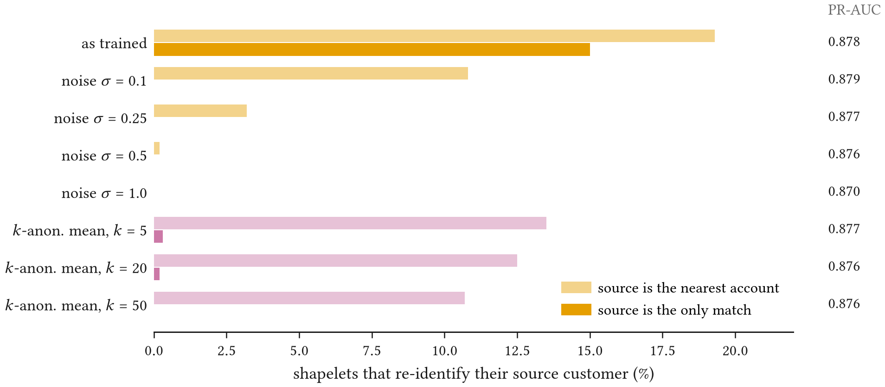

Abstract
Supervisors expect anti-money-laundering (AML) alerts to be explainable, and example-based classifiers such as shapelets offer explanations by construction: a decision is justified by a short pattern in an account’s activity. Most shapelet methods select these patterns by cutting them out of training accounts; learned shapelets instead optimise them from random initialisation. We show that, for the selection-based methods, including the state of the art, the explanatory pattern is often a specific customer’s own transaction history, together with the customer’s label. Across two AML benchmarks (SAML-D, AMLworld) and real bank data (Berka), we hand a fitted model to an adversary and measure what it reveals. For the state-of-the-art Random Dilated Shapelet Transform (RDST), 86% of released shapelets match exactly one of ∼30k SAML-D accounts (≈827 customers per model), and each carries its source’s class, so the model discloses who was flagged and lets anyone holding the model reconstruct exact weekly amounts. Uniqueness persists against 249,946 candidate accounts (100% of unique shapelets stay unique), on real customers (75% on Berka), when amounts are perturbed by ±5% (96% precision), and when normalisation statistics are withheld (75%); it fails only when the adversary misses much of an account’s activity. The standard aggregate membership audit reports AUC ≈ 0.5, whereas a tailored per-explanation audit flags 5.5% of training members at 0.1% false-positive rate. Learned shapelets, which never copy training data, single out no customer and resist memorisation; they match RDST accuracy on SAML-D but cost accuracy on AMLworld. Example-based explanations need their own privacy review.
Explanations Made of Customers
Anti-money-laundering monitoring is high-stakes, regulated and increasingly machine-learned, and supervisors expect every alert to come with a reason an investigator can act on. Deployed systems usually pair gradient-boosted trees with post-hoc explanations. Example-based models offer a different route: the explanation is built into the model. A shapelet is a short multichannel pattern, and a shapelet classifier decides from how closely each pattern appears in an account's history. The pattern that matched is the explanation. Laundering typologies such as structuring and fan-in/fan-out are shapes in time, which makes shapelets a natural candidate wherever explanations are required.
Shapelet methods come in two families, and the difference between them is the subject of this paper:
- Selected shapelets. The classic shapelet transform and the state-of-the-art Random Dilated Shapelet Transform (RDST) keep subsequences cut directly from training accounts. RDST also stores, for each shapelet, the mean and standard deviation used to normalise it and the class of the account it came from.
- Learned shapelets. Free parameters optimised by gradient descent from a random start. They need not resemble any single account.
That selected shapelets are copied subsequences is known. What has not been measured is how much a released model exposes in practice, against which adversaries, and whether the standard audits notice. We find that the answer is worse than the construction suggests.
Threat Model and Measurement
A bank trains a shapelet detector on labelled accounts, where the labels are past suspicious-activity findings. The fitted model then leaves the bank: it is shared with a vendor, an auditor, a regulator sandbox or a consortium partner, or it is stolen. We consider two adversaries.
- A data-holding party (vendor, auditor, partner, insider) holds transaction histories for many accounts, but not the bank's labels or training set. Matching shapelets against its accounts reveals which customers were in the training set and, through the stored class, which were flagged. Disclosing the latter conflicts with the confidentiality of suspicious-activity reports and with anti-tipping-off rules.
- A model-only party (model theft, a model marketplace) holds no data. From RDST it can undo the normalisation and read exact weekly amounts and counts of specific customers, which it can link to them later.
Each account becomes a multichannel weekly series \(X\): outgoing and incoming amounts and counts, cross-border amounts, and cash. A shapelet \(S\) of length \(\ell\) and dilation \(\delta\) is compared with every window of the account, and a shapelet singles out a customer when exactly one candidate account lies within \(\varepsilon\) of it:
We measure this on two AML benchmarks, SAML-D (29,946 accounts over 46 weeks) and AMLworld (23,409 accounts in 6-hour bins), and on Berka, 4,500 real anonymised accounts of a Czech bank, where a proxy task replaces the missing laundering labels. Accounts are split 50/50 into training members and non-members, and every result averages three seeds. We compare CatBoost and MiniRocket, which store no training subsequences, with the shapelet transform, RDST, and learned shapelets.
What a Released Model Reveals
Hundreds of customers per model, invisible to the standard audit
On SAML-D, 86% of RDST shapelets match exactly one account, about 827 customers per model. Each carries the class of its source, so a data-holding party learns which customers were flagged: 217 per model. Even the classic shapelet transform, which stores no statistics, singles out its source in 15% of cases from shape alone.

We observe that the leak is large but concentrated. Only a few hundred source accounts among roughly 15,000 training members are exposed, so the aggregate membership AUC stays at 0.52, indistinguishable from chance (Figure 1B). An audit that tests each explanation instead, flagging accounts matched by a shapelet and by no other account, identifies 5.5% of members at a 0.1% false-positive rate: 827 members and no non-members. The aggregate score finds about 0.1% at the same rate.
A model-only party learns something different but no less sensitive. Undoing RDST's normalisation recovers exact windows: a median of 13 non-zero weekly amount and count cells per identifying shapelet, with a median peak of about £25k. Normalising every shapelet and withholding the statistics removes the amounts but not the identity. 75% of shapelets still single out one customer, because a multi-channel dilated shape is itself a fingerprint.
Bigger candidate lists and real customers do not help
One might hope that a bank's full customer base would hide the source among look-alikes. Adding 220,000 further SAML-D accounts to the adversary's list, every shapelet that was unique among 29,946 accounts stays unique among 249,946. Nor is the effect an artifact of synthetic data.

On Berka's real accounts, 75% of RDST shapelets single out one customer, and even shape-only shapelets from the classic transform do so 44% of the time, against 15% on SAML-D. Synthetic generators therefore understate the problem rather than inflate it. AMLworld, with only 40 time steps per account, gives 64% for RDST.
What stops the attack
A real adversary's copy of the data will not be exact. We rebuild its view from raw transactions with amounts perturbed by ±5%, drop a share of transactions, and give it only part of the account list. It claims an identity only when the nearest account is at least twice as close as the runner-up.

Amount noise barely matters: with every amount perturbed, the adversary still makes 227 correct identifications at 96% precision, 62 of them flagged customers. With half the account list it finds about half as many, mostly correctly. What stops it is missing activity. Seeing 80% of transactions, it still makes 71 correct identifications at 78% precision; with half the transactions, precision falls to 27%. The threat is therefore real for parties that see an account's full activity, such as vendors and auditors given bank data, insiders, or anyone holding breached data, and weak for outsiders with a partial view.
Conventional models leak differently. CatBoost and MiniRocket store no training subsequences and show no membership signal on SAML-D, but on AMLworld and Berka they overfit (membership AUC 0.63 for CatBoost on both). They reveal whether a customer was used. Shapelet models reveal who the customer is, what they did, and how they were labelled.
Mitigations
We compare three ways of releasing a safer model: adding Gaussian noise to the shapelet values, replacing each shapelet by the mean of its \(k\) nearest training windows from distinct accounts, and learning the shapelets instead of selecting them.

Gaussian noise removes exact fingerprints at no accuracy cost, but the source stays the nearest account until \(\sigma \ge 0.5\). \(k\)-anonymous means stop unique matching but keep the source's neighbourhood linkable. Learned shapelets copy no one: none lies within \(10^{-2}\) of any SAML-D account, and even pushed to memorise, with 400 epochs on 300 accounts, the share of shapelets whose nearest account is a training member stays at chance, with no confident claims. Their cost depends on the data. On SAML-D they are the most accurate shapelet model (PR-AUC 0.957 against 0.948 for RDST). On AMLworld they trail RDST (0.39 against 0.57), and on Berka they reach 0.36 against 0.42.
The Math, Step by Step
The video below walks through the attack and the audit one equation at a time: how a shapelet is matched against an account, where selected and learned shapelets come from, what RDST stores and gives back, the re-identification rule, the realistic adversary, and why an aggregate membership audit cannot see a leak that a per-explanation audit catches.
Recommendations
The mechanism is not specific to shapelets: any explanation that is a stored training record together with its label, as in prototype and case-based models, raises the same question. For banks, vendors and supervisors reviewing such models, we recommend:
- Treat released shapelets as personal data. The shapelets, and the labels stored with them, are confidential customer records.
- Do not rely on normalisation. Normalising shapelets or withholding their statistics removes amounts, not identity.
- Prefer learned shapelets. They remove the leak, but check their accuracy cost on each dataset.
- Audit each explanation. Test example-based models one explanation at a time, at low false-positive rates, rather than with an aggregate membership AUC.
Limitations
Banks may not deploy shapelets for AML today. We use them as the clearest case of example-based explanation. The AML benchmarks are synthetic, and their positives are true laundering rather than the investigator-filed reports a bank would train on. Berka is real but uses a proxy task. Activity-matched 3:1 sampling makes detection easier than at real prevalence, although the bank-scale test shows that a much larger pool of normal accounts does not dilute re-identification. Our shapelet transform scores candidates by AUC rather than information gain, and the realistic-adversary study samples 300 of 1,000 RDST shapelets per seed. We did not run shadow-model attacks such as LiRA, since the per-explanation audit already detects the leak with no false positives. Noise and learned shapelets carry no formal guarantee; differentially private shapelet selection and DP-SGD training are the natural next step. SAML-D and AMLworld are synthetic, Berka is a public anonymised research release, and we report only aggregate statistics.
BibTeX
@inproceedings{tiku2026interpretable,
title = {Interpretable by Construction, Identifiable by Construction: Privacy Leakage of Shapelet-Based Anti-Money-Laundering Models},
author = {Tiku, Sarvesh and Sharma, Gauri},
booktitle = {ACM ICAIF 2026 Workshop on Financial AI Security, Safety, and Privacy},
year = {2026}
}